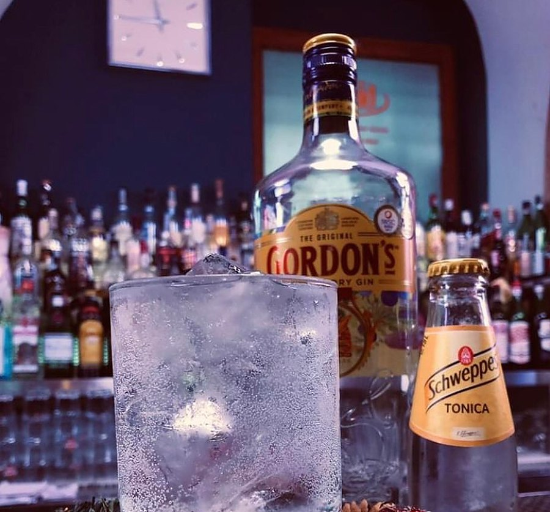
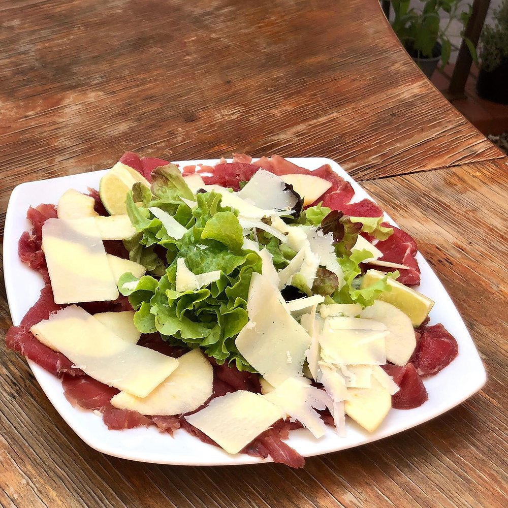
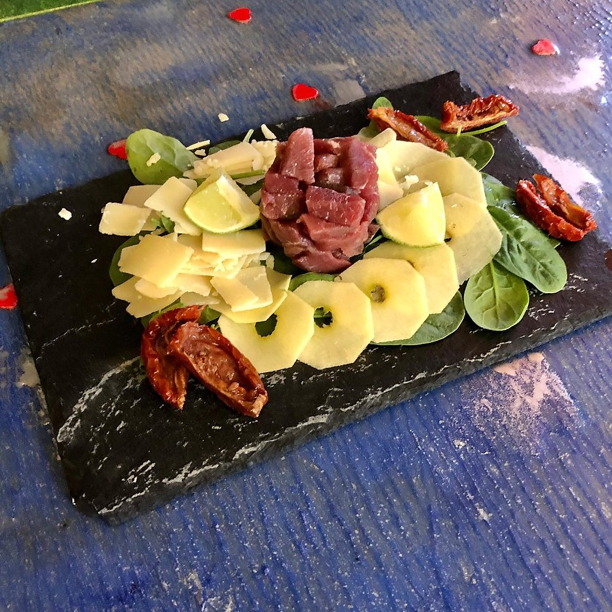
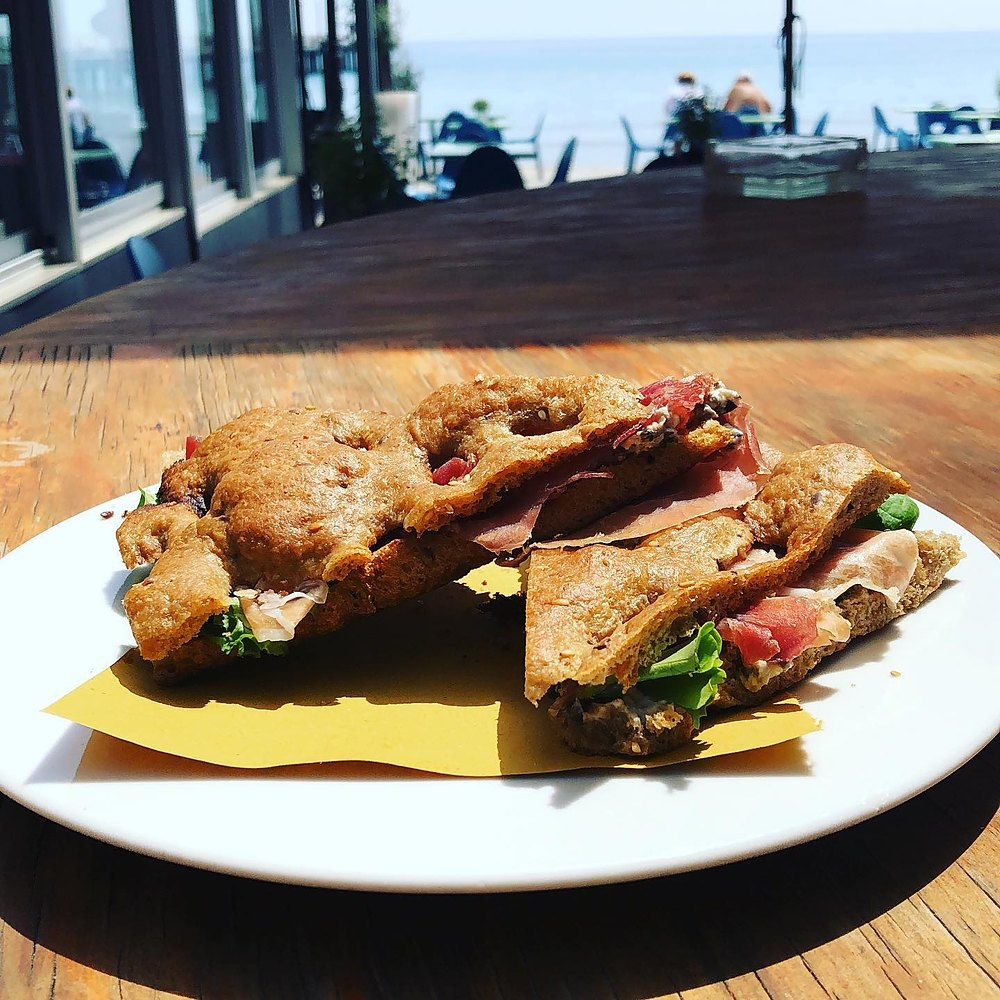
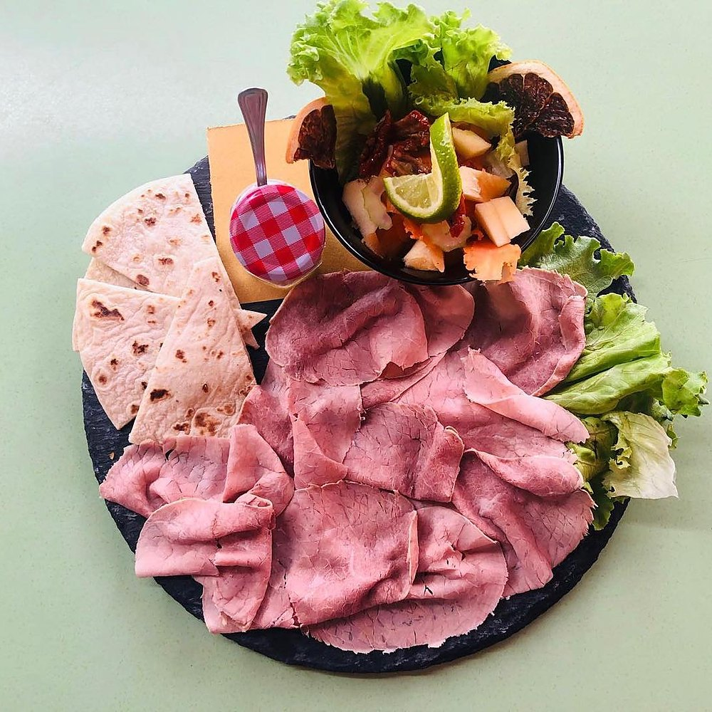
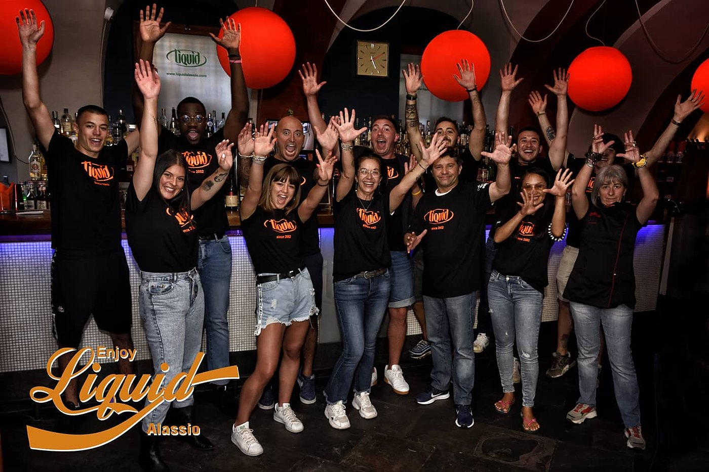

Cocktail bar sulla passeggiata di Alassio
Cocktail bar sulla passeggiata di Alassio
Tavoli fuori davanti al mare, musica dal vivo e il bancone acceso fino a notte. Si apre alle 11 del mattino, tutti i giorni.
4,5 su Google · 453 recensioniIl bancone
Il gin tonic si fa mentre lo guardi
Bottiglieria a vista, ghiaccio e bicchiere freddo: si ordina al banco e si beve lì, oppure ai tavoli sotto la volta. Chi ci è stato, su Google, ha segnalato proprio questo: «Ottimi cocktail».

Carta dei cocktail
- Negroni
- Gin, vermouth rosso e bitter in parti uguali. Scorza d'arancia.
- Gin tonic
- Gin, acqua tonica, ghiaccio abbondante e una fetta di lime.
- Spritz
- Bitter all'arancia, bollicine e una spruzzata di soda. Oliva.
- Moscow mule
- Vodka, ginger beer e lime, servito nel rame.
- Americano
- Bitter, vermouth rosso e soda. Il più leggero della casa.
- Daiquiri
- Rum bianco, lime e zucchero, shakerato.
Carta d'esempio, per far vedere come si apre: quella vera la scrive il locale.
Da mangiare
Taglieri, panini e insalatone
Roba da accompagnare al bicchiere, servita anche ai tavoli fuori: salumi e formaggi, carpacci, panini imbottiti, insalate grandi.




Il locale
Sotto la volta, luci che cambiano
Dentro è una cantina a volta di mattoni: divani, tavolini bassi e il bancone illuminato. Fuori, l'ingresso sul vicolo con l'insegna tonda.
Le serate
Musica dal vivo
È uno dei tre servizi che Google segnala del Liquid, insieme ai tavoli all'aperto e ai cocktail.
Appena sappiamo quando suonano dal vivo, qui va il calendario della settimana — è la cosa che la gente cerca prima di uscire.

Cosa dicono
«Testo della recensione vera, presa dalla scheda Google.»
Nome · su Google
«Testo della recensione vera, presa dalla scheda Google.»
Nome · su Google
«Testo della recensione vera, presa dalla scheda Google.»
Nome · su Google
Dove siamo
Passeggiata Dino Grollero 32
| Giorno | Orario |
|---|---|
| Lunedì | 11 – 02 |
| Martedì | 11 – 02 |
| Mercoledì | 11 – 02 |
| Giovedì | 11 – 02 |
| Venerdì | 11 – 02 |
| Sabato | 11 – 02 |
| Domenica | 11 – 02 |